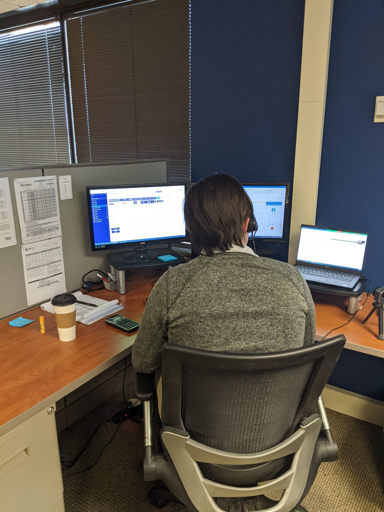
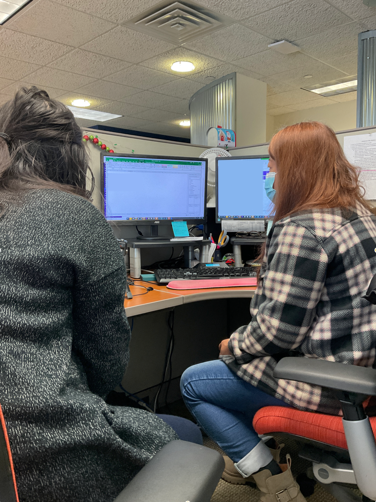
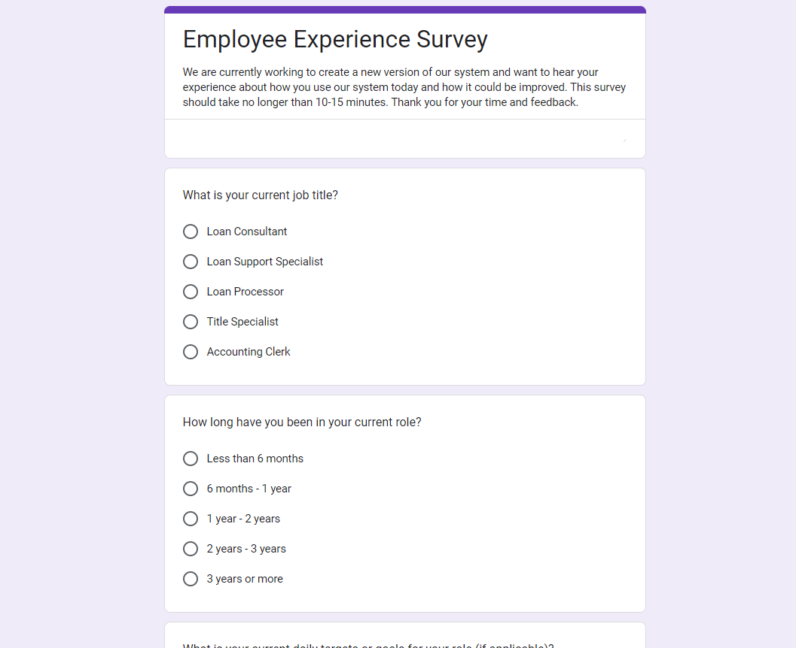
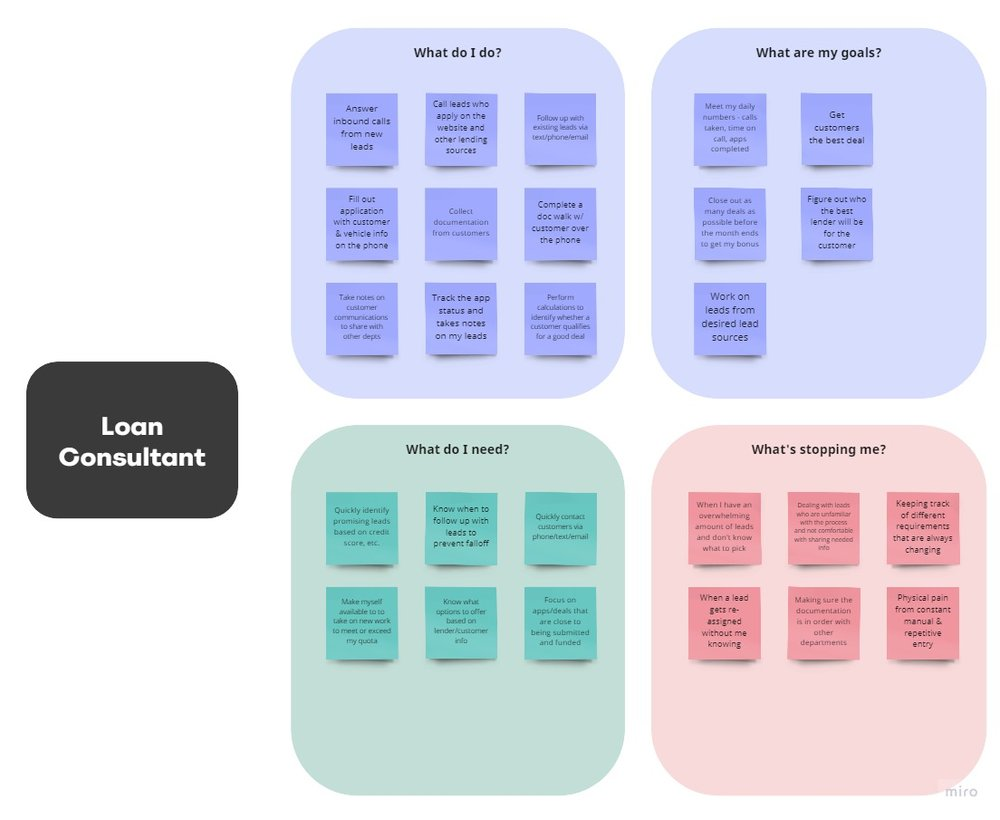

A redesigned internal loan‑refinancing system grounded in discovery research, including shadowing, interviews, and workflow analysis.
A financial services client needed to redesign their internal loan-refinancing system that their employees used while on the phone with customers to complete auto-loan refinance applications. They wanted to streamline their workflows so they could spend more time serving customers as well as ensure it was easy to learn for new employees.
I led discovery research during the first three months of the project, building user insights that would drive the product roadmap and align engineering, design, and the client around a shared understanding of what the rebuild needed to accomplish.




Employees managed hundreds of applications daily with no built-in way to identify the most urgent or highest-value tasks. They wanted to be able to quickly identify what’s the next important task they should be working on.
The application form followed an internal data logic that bore no resemblance to the call script employees used with customers. This caused employees to spend more time scrolling back and forth on the application and provided an opportunity to improve the layout to match the typical user flow.
The system did not support common employee tasks like setting up reminders to call a customer back or documenting customer notes. Employees were using other tools outside of the workforce application to perform these tasks.
Research insights directly influenced what the team prioritized, how user stories were written and sized, and how work was divided across multiple development teams — making research a structural input to the build, not just a precursor to it.
The research and design teams collaborated closely throughout the project, with design work grounded in research insights at every stage. This kept decisions evidence-based and reduced the risk of designing in the wrong direction.
By giving employees a structured way to provide feedback, the research process built trust between the team, the client, and the users. Participants felt heard — and that goodwill carried through into the broader relationship with the client.